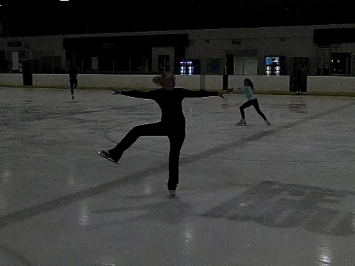

skater-300fps.mp4
A figure skater performs a "scratch spin." Since the net torque on the skater is approximately zero, her angular momentum is conserved.
recording speed: 300fps
topic:Angular Momentum Principle; conservation of angular momentum
video credit: Ashley Press and Aaron Titus